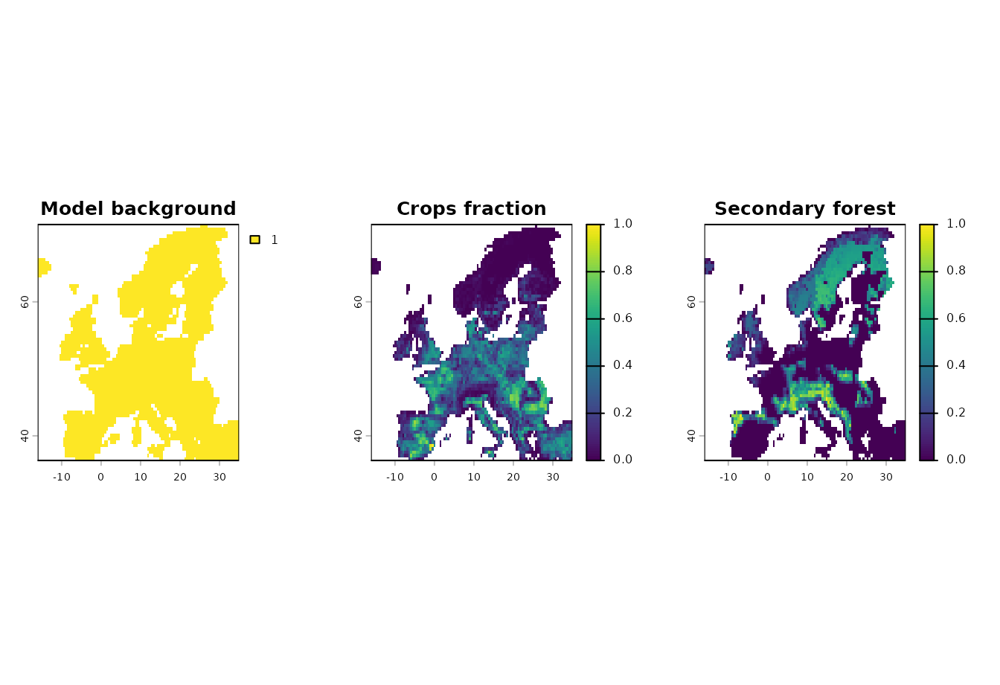
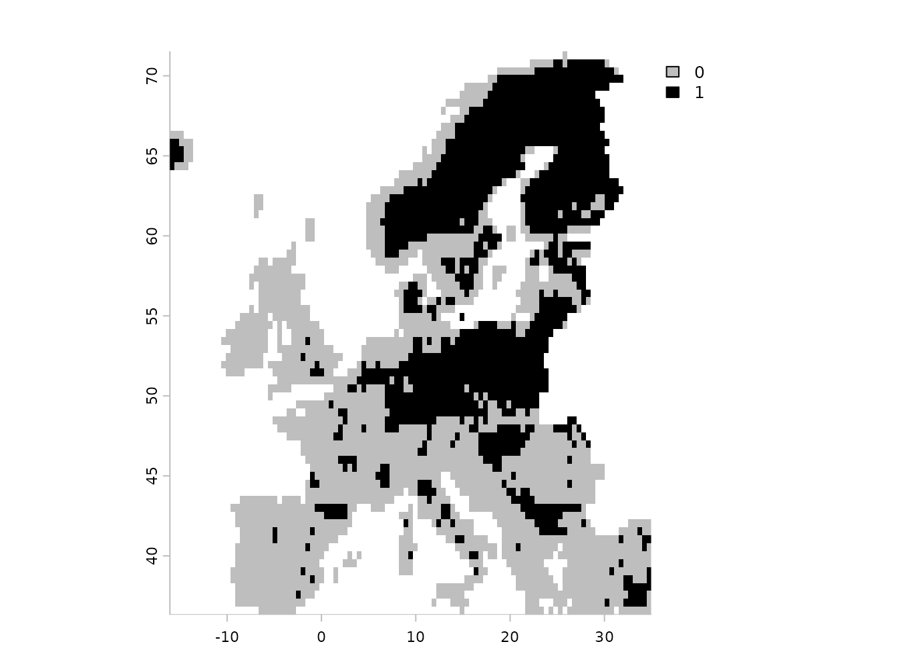
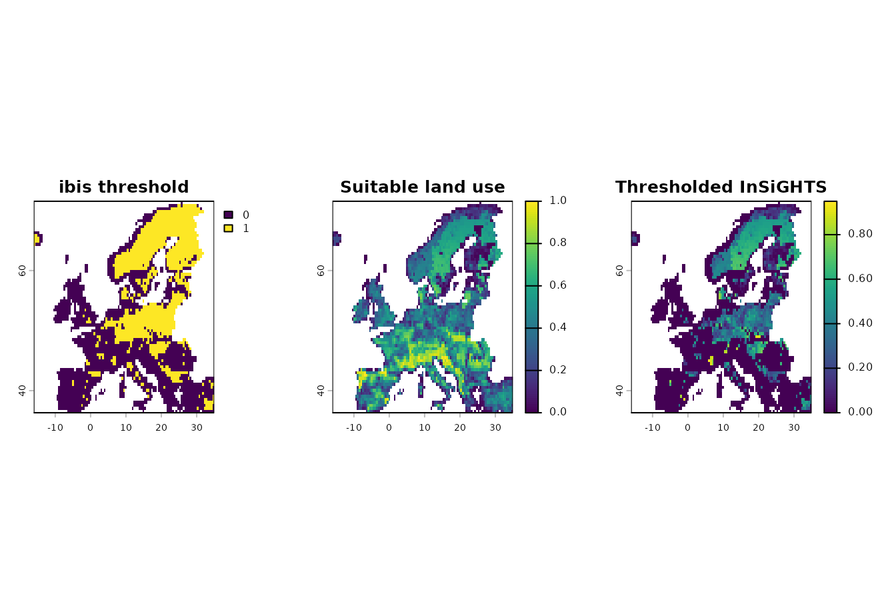
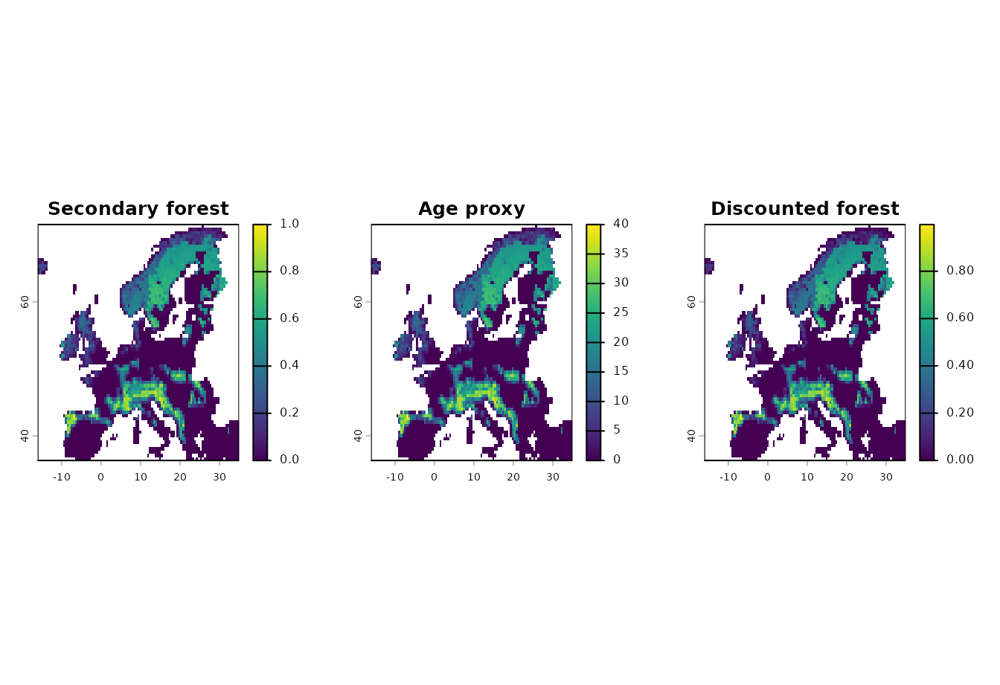
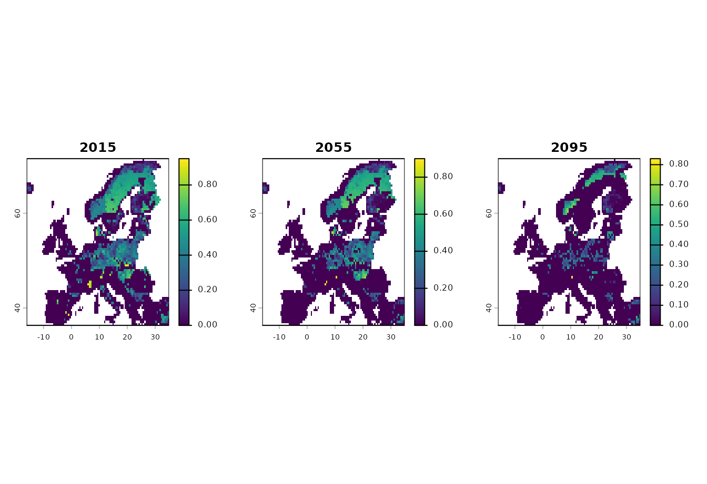

This article shows the direct ibis.iSDM integration
points in ibis.insights. Direct ibis object support is
intentionally limited to insights_fraction() and
insights_area(), where the thresholded distribution or
projection layer is used. Other preparation steps, such as maturity
discounting or using a continuous suitability projection, should operate
on SpatRaster or stars objects before
combining them with ibis outputs.
The examples fit a small ibis.iSDM model with the
example data distributed by ibis.iSDM, threshold it,
project it to a future predictor cube, and then apply the InSiGHTS
methods directly to the resulting ibis objects.
Example Data
The current model is trained from the ibis.iSDM Europe
grid, virtual occurrence points, and the first time step of the
present-future predictor stack. Land-use inputs for InSiGHTS are built
from the crops and secdf predictor layers.
background <- terra::rast(system.file(
"extdata/europegrid_50km.tif",
package = "ibis.iSDM",
mustWork = TRUE
))
sea <- terra::deepcopy(background) != 1
sea[is.na(sea)] <- 1
sea <- terra::as.int(sea)
virtual_range <- sf::st_read(
system.file("extdata/input_data.gpkg", package = "ibis.iSDM", mustWork = TRUE),
"range",
quiet = TRUE
)
virtual_points <- sf::st_read(
system.file("extdata/input_data.gpkg", package = "ibis.iSDM", mustWork = TRUE),
"points",
quiet = TRUE
)
predictor_files <- list.files(
system.file("extdata/predictors_presfuture/", package = "ibis.iSDM",
mustWork = TRUE),
full.names = TRUE
)
suppressWarnings(
pred_future <- stars::read_stars(predictor_files) |>
stars:::slice.stars("Time", seq(1, 86, by = 10))
)
sf::st_crs(pred_future) <- sf::st_crs(4326)
pred_current <- ibis.iSDM:::stars_to_raster(pred_future, 1)[[1]]
names(pred_current) <- names(pred_future)
land_use_current <- pred_current[[c("crops", "secdf")]]
land_use_current <- ibis.iSDM::predictor_transform(
land_use_current,
option = "norm"
) |>
round(2)
names(land_use_current) <- c("crops", "secondary_forest")
op <- par(mfrow = c(1, 3), mar = c(2, 2, 3, 4))
plot(background, main = "Model background")
plot(land_use_current[["crops"]], main = "Crops fraction")
plot(land_use_current[["secondary_forest"]], main = "Secondary forest")
par(op)Fit And Threshold A Distribution
The fitted object is a real ibis.iSDM
DistributionModel. After thresholding, it can be passed
directly to insights_fraction() and
insights_area().
poa <- virtual_points |>
add_pseudoabsence(field_occurrence = "Observed", template = background)
distribution_model <- distribution(background) |>
add_biodiversity_poipa(
poa,
field_occurrence = "Observed",
name = "Virtual points"
) |>
add_predictors(
pred_current,
transform = "none",
derivates = "none"
) |>
engine_glm()
modf <- train(
distribution_model,
runname = "Null",
only_linear = FALSE,
filter_predictors = "none",
inference_only = FALSE,
verbose = FALSE
)
modf <- threshold(modf, method = "perc", value = 0.3)
modf$show_rasters()
#> [1] "prediction" "threshold_percentile"
modf$plot_threshold()
Direct Distribution Methods
Direct DistributionModel calls use the thresholded
raster in the ibis object. The land-use layers are summed and applied as
fractional habitat layers.
threshold_aoh <- insights_fraction(
range = modf,
lu = land_use_current,
clamp = TRUE
)
insights_summary(threshold_aoh, relative = FALSE)
#> time suitability unit
#> 1 NA 842020.7 km2
threshold_layer <- modf$get_data("threshold_percentile")
if (terra::nlyr(threshold_layer) > 1) {
threshold_layer <- threshold_layer[[grep("mean", names(threshold_layer))[1]]]
}
summed_land_use <- terra::app(land_use_current, "sum", na.rm = TRUE)
summed_land_use <- st_clamp(summed_land_use, lb = 0, ub = 1)
op <- par(mfrow = c(1, 3), mar = c(2, 2, 3, 4))
plot(threshold_layer, main = "ibis threshold")
plot(summed_land_use, main = "Suitable land use")
plot(threshold_aoh, main = "Thresholded InSiGHTS")
par(op)Area-valued land-use layers work the same way with
insights_area().
land_use_area <- land_use_current * terra::cellSize(
land_use_current[[1]],
unit = "km"
)
threshold_area <- insights_area(
range = modf,
lu = land_use_area
)
insights_summary(threshold_area, toArea = FALSE, relative = FALSE)
#> time suitability unit
#> 1 NA 842020.7 inputPrepared Inputs First
Maturity discounting is a raster operation. Apply it to the land-use layer first, then combine the prepared layer with the ibis object.
forest_age <- land_use_current[["secondary_forest"]] * 40
names(forest_age) <- "secondary_forest_age_years"
invisible(utils::capture.output({
discounted_forest <- insights_discount(
lu = land_use_current[["secondary_forest"]],
age = forest_age,
target_age = 20,
target = 0.95
)
}))
names(discounted_forest) <- "discounted_secondary_forest"
discounted_land_use <- c(land_use_current[["crops"]], discounted_forest)
names(discounted_land_use) <- c("crops", "discounted_secondary_forest")
discounted_aoh <- insights_fraction(
range = modf,
lu = discounted_land_use,
clamp = TRUE
)
rbind(
no_discount = insights_summary(threshold_aoh, relative = FALSE),
discounted = insights_summary(discounted_aoh, relative = FALSE)
)
#> time suitability unit
#> no_discount NA 842020.7 km2
#> discounted NA 811157.7 km2
op <- par(mfrow = c(1, 3), mar = c(2, 2, 3, 4))
plot(land_use_current[["secondary_forest"]], main = "Secondary forest")
plot(forest_age, main = "Age proxy")
plot(discounted_forest, main = "Discounted forest")
par(op)Project A Scenario
The scenario projection is a real ibis.iSDM
BiodiversityScenario. It is thresholded before projection
so the direct InSiGHTS methods can use the projected
threshold layer.
mod <- scenario(modf, reuse_limits = FALSE, copy_model = TRUE) |>
add_predictors(
env = pred_future,
transform = "none",
derivates = "none"
) |>
threshold() |>
project()
names(mod$get_data())
#> [1] "suitability" "threshold"For scenario objects, temporal land-use or condition layers with
different time steps are aligned to the scenario with
align_temporal(). Here the land-use input keeps only the
first and final time steps, while the scenario projection contains all
projected time steps.
land_use_future <- pred_future |>
stars:::select.stars(crops, secdf) |>
stars:::slice.stars("Time", c(1, 9))
land_use_future <- ibis.iSDM::predictor_transform(
land_use_future,
option = "norm"
) |>
round(2)
#> [Setup] 2026-06-12 17:27:15.778832 | When transforming future variables, ensure that unit ranges are comparable (parameter state)!
names(land_use_future) <- c("crops", "secondary_forest")
stars::st_get_dimension_values(land_use_future, "Time")
#> NULL
scenario_aoh <- insights_fraction(
range = mod,
lu = land_use_future,
clamp = TRUE
)
scenario_summary <- insights_summary(
scenario_aoh,
relative = TRUE,
symmetric = TRUE
)
scenario_summary
#> time band suitability unit relative_change relative_change_sym
#> 1 2015-01-01 2015-01-01 0.00 km2 0.00000000 0.00000000
#> 2 2025-01-01 2025-01-01 -53922.03 km2 -0.06403884 -0.03307858
#> 3 2035-01-01 2035-01-01 -125891.75 km2 -0.14951146 -0.08079567
#> 4 2045-01-01 2045-01-01 -185600.37 km2 -0.22042256 -0.12386230
#> 5 2055-01-01 2055-01-01 -258136.68 km2 -0.30656808 -0.18103360
#> 6 2065-01-01 2065-01-01 -351191.69 km2 -0.41708199 -0.26348932
#> 7 2075-01-01 2075-01-01 -455024.35 km2 -0.54039566 -0.37023435
#> 8 2085-01-01 2085-01-01 -534150.31 km2 -0.63436717 -0.46452250
#> 9 2095-01-01 2095-01-01 -615340.75 km2 -0.73079050 -0.57578398
scenario_aoh_raster <- terra::rast(scenario_aoh)
scenario_times <- stars::st_get_dimension_values(scenario_aoh, "time")
op <- par(mfrow = c(1, 3), mar = c(2, 2, 3, 4))
plot(scenario_aoh_raster[[1]], main = format(scenario_times[1], "%Y"))
plot(scenario_aoh_raster[[5]], main = format(scenario_times[5], "%Y"))
plot(scenario_aoh_raster[[9]], main = format(scenario_times[9], "%Y"))
par(op)Continuous Suitability
Continuous suitability is not a special ibis dispatch mode in
ibis.insights. Extract it from the ibis.iSDM
object and pass the resulting SpatRaster or
stars object to the normal raster methods.
scenario_layers <- mod$get_data()
suitability_name <- setdiff(names(scenario_layers), "threshold")[1]
suitability_projection <- scenario_layers[suitability_name]
names(suitability_projection) <- "suitability"
suitability_aoh <- insights_fraction(
range = suitability_projection,
lu = land_use_future,
clamp = TRUE
)
insights_summary(suitability_aoh, relative = TRUE)
#> time band suitability unit relative_change
#> 1 2015-01-01 2015-01-01 0.00 km2 0.00000000
#> 2 2025-01-01 2025-01-01 -26412.91 km2 -0.02409323
#> 3 2035-01-01 2035-01-01 -59455.48 km2 -0.05423389
#> 4 2045-01-01 2045-01-01 -96997.94 km2 -0.08847923
#> 5 2055-01-01 2055-01-01 -141190.15 km2 -0.12879032
#> 6 2065-01-01 2065-01-01 -187187.09 km2 -0.17074764
#> 7 2075-01-01 2075-01-01 -230156.64 km2 -0.20994346
#> 8 2085-01-01 2085-01-01 -273804.68 km2 -0.24975816
#> 9 2095-01-01 2095-01-01 -311189.54 km2 -0.28385976Use the thresholded workflow when a binary area of habitat is required, and use an extracted suitability workflow when the climatic suitability value should remain part of the final index.